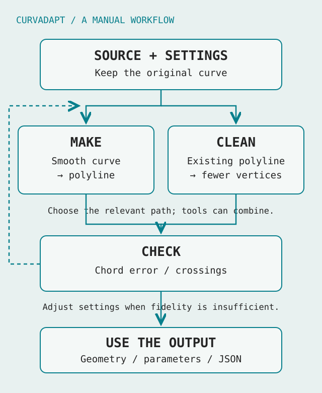

Grasshopper plugin / Curve preprocessing
CurvAdapt
Segment curves, simplify polylines and inspect geometric fidelity inside Rhino and Grasshopper.
How can a smooth curve become useful discrete geometry with an explicit approximation error?
Choose uniform or adaptive segmentation, simplify where appropriate and inspect chord error before using the result downstream.
Curve preprocessing inside Grasshopper
CurvAdapt is a Grasshopper plugin for Rhino 8. Segment smooth curves, simplify polylines and measure chord error before passing discrete geometry to another tool.
Choose a method and tolerance for the geometry at hand. Inspect the resulting approximation instead of relying on segment count alone.
From input curve to checked output
-
01
Choose the input
Start with a smooth curve and select a segmentation component. The segmentation pipeline intentionally rejects polyline inputs.
-
02
Set the method
Use uniform parameter or length spacing, or adaptive chord-error, curvature or tangent methods.
-
03
Inspect fidelity
Measure maximum and relative chord error. Check discontinuities and self-intersections where relevant.
-
04
Continue the workflow
Use the resulting geometry and parameters in Grasshopper, or the JSON conversion utilities for exchange.
How the tools connect

From a curve to discrete geometry
The component library
Make / Segmentation
Clean / Simplification
Check / Analysis
Tools / Geometry and data
Find Kinks
Locate continuity breaks and critical points.
Match Length
Scale a curve to a target arc length.
t to Points
Evaluate curve points at parameters.
Points to t
Project points to curve parameters.
Write JSON
Record polyline geometry as JSON.
Read JSON
Read polyline geometry from JSON.
Sort Points
Merge and sort points along a curve.
Split at Points
Split a curve at projected points.
Continuity selector
Select the continuity type used by detection tools.
Help / Community and learning
Tolerance-aware inputs
Parameter handling includes domain checks, sorting, duplicate cleanup and tolerance-aware projection. Inspect warnings for off-curve inputs.
Open and closed curves require different treatment at seams and continuity breaks. Select settings for your geometry and verify the output.
Compatibility and setup
-
01
Check the host
The current Windows build targets Rhino 8.30 or newer running .NET 8, with Grasshopper. Rhino 7 and .NET Framework are not targeted.
-
02
Build from source
The project includes a development install script that builds the plugin and registers a .ghlink file. A public stable package is not confirmed here.
-
03
Open Grasshopper
Find the CurvAdapt tab. Restart Rhino after rebuilding and avoid loading a second copy of the same plugin.
Start with a simple curve
Connect a circle or smooth NURBS curve to Step Evenly in CurvAdapt > Make. Adjust the segment input and inspect the output points and polyline.
The repository smoke-test example uses a radius-10 circle with 10 segments, expecting 11 points and one polyline. This is a starting check, not validation of every algorithm.
Availability and scope
The geometry-processing components are implemented locally. No public stable package or installer is confirmed here. CurvAdapt does not perform robot motion planning, fabrication execution, building-energy simulation or predicted energy savings.